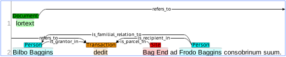

Grab Bag of functions on annotated documents, and RDF
This web-application is a prototype implementing some of the functionality that will be required of any sort of 'workbench' for working with charters annotated by BRAT, or encoded in RDF. These implementations are intended to work out practical problems with respect to server side services as opposed to user side services.
- Graph a Document
- Levenshtein distance
- Grep search
- gBooks search
- SPARQL search
- Serialize one of our corpora as RDF
- Tests on ADS triple store
- My "Named Graph" problem illustrated
- Upload triples in different flavors; issue Arbitrary SPARQL queries against the ADS store.
- Visualize Frodo Graph
- Use the SVG as an interface for annotation Entities and Relations.
Visualize a document as a directed graph (bubbles and arrows).
Choose a corpus from the list below and at the left, then click on an annotation file. Our brat annotations will be rendered as a directed graph (bubbles and arrows), and below that, as an RDF/n3 graph.
 clear graphs
clear graphs
Damerau-Levenshtein Distance Search
Search the selected corpus for marked up entities of the type selected that are similar to the target string. Selecting a Levenshtein distance of '0' will return exact matches. There are lots of Python implementations of the Levenshtein distance algorithms, this one, from Michael Homer's blog: is elegant and efficient.
This search may not scale well because it opens each annotation file (using os.walk()), one by one, and then uses the python re module to execute the search. We could certainly refactor it to use grep input instead. The grep search will likely be faster because it relies on the *nix grep utility. This search is case-insensitive, and accepts Perl-type regular expressions.
hmm. On further consideration, its not at all clear that we can apply an edit-distance measurement in the context of a grep search.
| Directory to search: | |
| Entities to search: | |
| Maximum Levenshtein distance: | |
| Target string: |
Grep Search
Search the selected corpus and filetype for the target string. This strategy will likely scale better than the Levenshtein distance search because it relies on the *nix grep utility. The target string argument is passed directly to grep, so this search too accepts Perl-type regular expressions This search is case-insensitive.
| Directory to search: | |
| filetype to search: | ann txt |
| Target string: |
Google-books search
While Google's motives are generally clear, I have grave reservations about their methods. In many ways, Google's project to scan the entire contents of several research libraries is laudable. Leaving aside the much discussed issues of intellectual property, the nature of these scans is seriously problematic. As we have excellent cause to know, scanning and OCR on published texts is an exacting and time-consuming process. Legacy data requires careful curation, not merely acquisition. On many published editions of 19th century resources, OCR has a very high, indeed unacceptable, error rate. Google's method, it appears, emphasizes merely acquisition and the result has been to populate the internet with a growing ocean of bad data.
From the point of view of the individual scholar, Google's project has been, and can be a boon. These data are accompanied by a visual representation of the scanned text, either as pdf or dejaVu or some other image format. This means that for any individual scan, the text is human readable, and so the error rate in the OCR data is of less pressing concern. But, from the point of view of machine processing, the very high error rate of OCR essentially renders the data garbage. Google's procedure is thus, in effect, polluting the data-sphere at an alarming rate. As the available ocean of data grows rapidly beyond manageable proportions, this kind of pollution is becoming a very serious problem.
Having said this, however, for the present use case the following search may have some utility. That use case in brief is this: the user is working on some body of charter or other historical source material. She is marking up these sources for her own purposes, according to some ontology/schema/vocabulary of her own devising, or according to some existing schema. In this process, the researcher encounters place names and names of principle actors and needs to answer questions like this: is this person/place the same or different from other persons of the same or similar name? What other sources are extant that contain reference to this person or other similarly named persons? What, generally, is the period or place in which this name appears, and in what contexts?
In the case of well known historical personages, a search like this across Google Books is not very helpful. The scholar would be better served by some conventional library search. Try a search below, for example, on the string "Simon de Montfort": not particularly illuminating. On the other hand, searching on the string "Alan de Quixlay" (from our vicars-choral-397) gives results that can be immediately useful to the scholar trying to answer some of these questions
The search interface below is as yet rudimentary. The google api for books is pretty rich, and this implementation does not go beyond the 'hello world' phase; moreover, it's implemented here pretty clumsily and is intended only as a 'proof of concept' illustration. For example, for the search below, there is no server-side processing. The query is issued and results retrieved via ajax and jsonp. It will be desirable, I think, to hit this api from the server instead where further processing using server-side data can be accessed as well.
| Target string: |

SPARQL queries (NB: this sparql experiment is superceded by our ADS sparql endpoint)
In the absence of some kind of triple store with a real API, like Sesame, I've cobbled one together using rdflib so that I can make some experiments with SPARQL queries. Python's rdflib module can be used with an in-memory store, such as is used in the example below, but it can also be used with several other sorts of back-ends: Sesame, or PostgreSQL, or MySQL and some other options. Rdflib's SPARQL implementation is robust, and cleaves closely to the specification, so queries that work here can be made to work with most other sparql end-points.
For the purposes of this demonstration, an RDF graph of the whole of the Deeds corpus was made and stored as a plain text file. It didn't make sense to generate the whole graph for every query, but I didn't want to implement a relational database store just for the purposes of this experiment, so I generated the rdf graph and saved it as a text file: manageable for just our 50 documents in Deeds.
With each query, the server reads the rdf file, creates an in-memory store, and applies the given SPARQL query to it. The sample query that's baked in is a CONSTRUCT query. SELECT queries, for the moment, won't produce useful results because the result is serialized as an rdf graph in n3 format. Other serializations are available of course, including now JSON-LD (JavaScript Object Notation for Linking Data) which seems promising for making our data interoperable.
Note that the sparql plugin for rdflib appears to support the full current spec for the query language, including the available FILTERs. So we can use the sparql regex function for full-text searches of our RDF data, like this:
CONSTRUCT { ?s ?p ?o .}
WHERE { ?s ?p ?o .
FILTER regex(?o, "simon", "i")}
And we can use the filter to retrieve all the triples for a particular document. This seems like a very clugy way to do this. I haven't worked out yet how to use sparql to address rdflib's version of 'contexts', but for the time being, this works:
CONSTRUCT { ?s ?p ?o .}
WHERE { ?s ?p ?o .
FILTER regex(str(?s), "deeds-00880770", "i")}
TODOs:
Currently, the rdf for a document corpus is generated using a separate namespace for each document. This will make it possible to make assertions like this:
<urn:deeds-000888#T13> owl:sameAs <urn:deeds-000889#T23>
This may turn out to be cumbersome for some kinds of inferencing. It may be more useful to make use of quads and named-graphs like this:
chartex:foo a chartex:graph;
:fiz {
chartex:Pid#T13 a chartex:Person;
chartex:has_name "Simon" .
};
:buz {
chartex:Pid#T23 a chartex:Person;
chartex:has_name "Simon" .
} .
Tools like cwm and others can do some pretty sophisticated querying and inferencing across named graphs (see especially Named Graphs, Provenance and Trust (Bizer, Carroll, Hayes, Stickler (2004)). It appears that rdflib can do this too. It has thoroughly developed support for quads and contexts; I just haven't yet figured out how to address them with a sparql query
Serialize the RDF graph of all the annotations in a single corpus.
Use the box at the bottom to get a serialization of the RDF graph of all the Entities and Relations in a given corpus. This is the same machinery that I distributed on basecamp as a command line utility (ann2rdf.py). I got no response to that, so I surmised that installing the rdflib python library and running that utility at the command line was too onerous. So, I present the same thing here as a web service so that A. Arno and Marvin can get an idea about target formats for triples, and B. Chris can give some thought to RDF and LOD.
Once again, I make appeal for feedback on this. I'm not sure I'm generating the graph in the best way. I need advice especially on
- Namespaces
- In order to be able to distinguish between individual documents such that, for example, #T1 (the document Entity) in deeds-00880074 is a different node from #T1 in deeds-00880653, I created the URI in a different namespace, like this:
"http://yorkhci.org/chartex-schema/deeds-00880074#T1" "http://yorkhci.org/chartex-schema/deeds-00880653#T1"This proliferation of namespaces could prove awkward for some purposes, but it served for the moment since we still don't have any real data. -
There are some other ways of doing this:
- We could, for example, generate the identifier to the right of the hash in such a way as to identify the Entity uniquely, eg.
"http://yorkhci.org/chartex-schema/deeds#00880074_T8T12_Person_Warinus_Goding"
That way we might limit the number of namespaces to one per corpus. This might help with the problem of dereferenceable URIs below: - Or we might generate a separate graph for each document, and use the "named graph" extension to the RDF spec. The named graph paradigm will support more sophisticated inferencing. (for more on this, click on "SPARQL search" in the list above).
- We could, for example, generate the identifier to the right of the hash in such a way as to identify the Entity uniquely, eg.
- Dereferenceable URIs
- Persuant to best practices in LOD, URIs should be dereferenceable; all of them! This means that if somebody sticks "http://yorkhci.org/chartex-schema/deeds-00880074#T1" in a browser, something comprehensible should come back, either human or machine readable, preferably both (see: cool URIs). This will require doing some thinking about infrastructure, and content negotiation. Maybe we want to use PURLs?
Choose a directory, choose a serialization format, push the button:
| Directory of Brat annotations: | |
| Serialization format: |
|
Tests on our ADS triple store
The default serialization for the following functions is 'turtle'. These take care of basic CRUD operations. Update can be accomplished by deletion of statements and addition of revised statements.
| Directory of Brat annotations: |
|
|
My "Named Graph" problem illustrated
In the previous examples an RDF graph for an entire corpus of documents is generated and then stored on the ADS server. As previously discussed in "Serialize one of our corpora as RDF", in order to distinguish between entities like "#T13" in one document and "#T13" in another, I've given them different namespaces like this:
"http://yorkhci.org/chartex-schema/deeds-00880074#T1"
"http://yorkhci.org/chartex-schema/deeds-00880653#T1"
This leads to a lot of namespaces: one for every document. But we could instead provide a separate namespace for the corpus instead, and load our triples into separate "Named Graphs" or "Contexts". Our ADS AllegroGraph server is context aware so the following procedure is possible:
- lets load some sample triples. Our main graph will contain a namespace for each corpus like this:
@prefix:ex <http://example/corpus/vicars_floral#>. Each set of triples, as they are generated from our brat annotations, will be stored in a different "Named Graph" or context, one for each document.http://example/corpus/vicars_floral/VF-111 = ( (ex.T7, RDF.type, ex.Person), (ex.T7, ex.has_spouse, ex.sally), (ex.T7, RDFS.label, Literal('Simon', datatype=XSD.string)) ) http://example/corpus/vicars_floral/VF-112 = ( (ex.T14, RDF.type, ex.Person), (ex.T14, ex.has_spouse, ex.sarah), (ex.T14, RDFS.label, Literal('Simon', datatype=XSD.string)) )Our triple store will then contain 6 statements, let's see them:
But if we want to see statements about Simon that only appear in the context of one document, we can issue a sparql query to our graph that looks like this:
CONSTRUCT { ?s ?p ?o } FROM <http://example/corpus/vicars_floral/VF-112> WHERE { ?s ?p ?o } - Does this have advantages? (See the discussion at "Serialize one of our corpora as RDF" above.)
-
- Sparql queries will be simpler if we want to confine them to a single document.
- With URIs like this for each graph,
http://example/corpus/vicars_floral/VF-112, content negotiation could serve up text for individual documents? - Namespaces like http://example/corpus/vicars_floral# make individual corpora addressable in the graph?
This is giving me a headache, I still don't know what's best to do. Much will depend on the nature of the data coming from Brighton and Leiden, but even in terms of our brat annotated test data, there are issues here that I haven't got my head around yet.
What I'm most interested in aiming at is the ability for historians to annotate for themselves any entity or relation that appears in any document in our corpora, and, idealy, share it (or not, by choice) as LOD by storing it in our ADS triple store where it can enrich the raw data, and be searched and analysed by means of data mining just like the raw data. This issue is a vexed one in the LOD community, and I'm open to suggestions or observations
Relevant Bibliography:
- Jeni tennison's blog http://www.jenitennison.com/blog/node/159
- With an eye toward CIDOC, Vladimir Alexiev, Types and Annotations for CIDOC CRM Properties http://www.ontotext.com/sites/default/files/publications/CRM-Properties.pdf
Upload triples to ADS; Query them with SPARQL
Now that we have a bona fide triple store supplied by the Archaelological Data Service, and a usable REST API to that store, it becomes more urgent that we consider the nature of the data that we propose to store there. There are competing desiderata, unanswered questions, and several possible approaches. Below, we can consider some of those approaches, and try them out to see if they will have the functionality we require.
- Start by for the purposes of the following experiments.
-
As before, select one of our corpora to graph, and a serialization format for it. There's more than one way to construct a graph from the brat annotation data that we have. If you consider the shape of the raw data you'll note that in the context of the corpus as a whole, designations like T1 or T14 are only meaningful within the context of a single document. Thus, within the corpus as a whole there might be multiple T14s, each designating a different entity. This is the textbook description of Blank, or Anonymous, nodes. So if we consider the corpus as a whole to be the default graph, then it is composed entirely of blank nodes.
While Blank Nodes accurately describe our brat annotation data, constructing our graph in this way will create all sorts of problems down the line, not the least of which is in making SPARQL queries against it. You can use the SPARQL form below to experiment with such queries.
Use the form below to serialize a corpus, just to see what you're doing before adding triples to the store. Directory of Brat annotations: Serialization format: chartexCGI.py
chartexCGI_BN.pyThe ADSUpload button will ignore the serialization format selected above. Triples will be added using turtle format by default, but, of course this has no bearing on the graph that is thus created. Nota Bene: If
chartexCGI_BN.pyis selected, the triples will be generated as blank nodes and uploaded as multiple contexts, or "Named Graphs," one for each document. These graphs can be addressed by their URI's, for example: <http://example.com/graph/deeds-00880074>.If
chartexCGI.pyis selected, the graph will be generated as before and uploaded as a turtle serialized graph with only the default context.Given the many problems associated with BNodes (a good summary of pros and cons to be found here), the considerate and prudent data-provider (that would be us) should instead provide real URIs for all of the elements we offer for consumption. This necessitates a rational naming scheme: one that can be supported by real de-referencing mechanisms. That is, if we call something <http://example.com/documents/deeds#00880074_T8T12_Person_Warinus_Goding>, then if someone were to put that in a browser, something sensible ought to come back.
Up until these recent Blank Node experiments, I've been using URIs like this <http://yorkhci.org/chartex-schema/deeds-00880196#T57>, this is not tenable for a variety of reasons, but the most important is this: it doesn't make sense to a human being. This URI does uniquely identify a person named "Sthephano Scott," who appears in the document deeds-00880196, but this designation does not help a machine find and present useful information to the user, neither does it tell a human user anything interesting or useful.
- Run an arbitrary SPARQL query against the triples in the ADS store
The SPARQL interface below will send a query as a simple GET request to our ADS HTTP interface. There is no content negotiation apart from choosing the format to display results. Such queries require no authentication.
The query below, baked in by default, is one that assumes the presence in the triple store of our Deeds corpus. This query illustrates that with such a model we can confine our query to within the context of a named graph.
The query can be edited or replaced at will.
Visualize triples in the store
The graphviz svg visualizations of our graphs is not optimal. So far they've been in here because they were easy to generate server-side without translating them into json first. Since there isn't anything built for the user interface, I don't know yet what sort of JSON data it will require, so for the purposes of illustration, I've just stuck with the SVG for now. If sombody knows a lot more about SVG than I do, they could probably turn this into a very cool UI; however, I think using js libraries like JIT will be more flexible for a client side UI.
Until now the bubbles and arrows visualizations have been generated from RDF that is generated in memory and derived from brat annotation files. Here we'll show how to generate them directly from the ADS triple store in response to SPARQL queries or other REST interactions.- Let's start as before by
- Supposing we have a very simple conveyance. Let's see this charter as it might be marked up in BRAT: (click to toggle) 
- Now let's generate an RDF graph from it and display it below as 'bubbles and arrows' We've done this exactly as we have done before:
- on the server side, we create an RDF graph in memory from the annotation data,
- then we create a 'dot' graph from it,
- from the dot graph we generate some svg using 'graphviz',
- and finally, we send the svg back to the client where it's displayed along with a text representation of the serialized RDF.
- Now let's clear this graph from the display below by clicking on the button.
- Now we will upload the triples in this Frodo graph to our (empty) ADS triple store:
-
Now let's retrieve those triples from the triplestore and visualize them as bubbles and arrows.
This time, instead of creating the graph in memory, we've retrieved it from the ADS triple store by means of a REST interaction that just retrieves all the statements in the store. Alternatively, we could generate a graph in response to a SPARQL query and visualize that.
- Now let's add some more triples to the triple store, these for example:
<http://example.org/lortext#drogo_baggins> <http://www.w3.org/1999/02/22-rdf-syntax-ns#type> <http://yorkhci.org/chartex-schema#Person>
<http://example.org/lortext#drogo_baggins> <http://yorkhci.org/chartex-schema#textSpan> "Drogo Baggins"^^<http://www.w3.org/2001/XMLSchema#string>
<http://example.org/lortext#T4> <http://yorkhci.org/chartex-schema#is_son_of> <http://example.org/lortext#drogo_baggins>
- Now if you click on the , we'll retrieve the statements in the triple store again. Ta Da! new triples.
Annotating our data as Linked Open Data
We can now store our data, either the brat annotation files or incoming data from Leiden, as RDF triples in the ADS AllegroGraph store. Historian/researchers will want to retrieve and display this data in various ways, they will also want to annotate it. The problem of annotation of RDF data has a history that does not begin with this article (Lopes, Zimmermann et alia (2009)) but is nicely summarized by it. Since 2009, all of the enterprise level triple stores, including AllegroGraph, have implemented some version of Named Graphs, or contexts, and are - in fact - quad stores.* This makes annotating RDF feasible, as the original 'reification' mechanism in RDF has been, for several reasons, deemed too problematic for this purpose.
Also since 2009, extensive work has been done by the W3C Open Annotation Community Group on creating a standardized ontology for the creation of RDF annotations. The Open Annotation Data Model which will be rolled out next month at Stanford University, and in June at the University of Manchester in the UK. Since it is precisely relevant to our application, it is worth quoting the stated justification of Open Annotation here in full.
Annotating is a pervasive element of scholarly practice for both the humanist and the scientist. It is a method by which scholars organize existing knowledge and facilitate the creation and sharing of new knowledge. It is used by individual scholars when reading as an aid to memory, to add commentary, and to classify. It can facilitate shared editing, scholarly collaboration, and pedagogy. Over time annotations can have scholarly value in their own right. Yet scholars remain dissatisfied with the options available for annotating digital resources. Scholars wanting to annotate have to learn different annotation clients for different content repositories, have no easy way to integrate annotations made on different systems or created by colleagues using other tools, and are often limited to simplistic and constrained models of annotation. The importance of annotating as a scholarly practice coupled with the real-world limitations of existing practices and tools supporting annotation of digital content has had a retarding effect on the growth of digital scholarship and the level of digital resource use by scholars.
* Technically AG is a 'quint' store: in addition to triple + context, each statement has a unique id by default. We can see these ids if we serialize results as application/x-quints+json; however, we cannot address triples by id via the HTTP interface so far as I can tell.
Steps toward creating graph annotations
- Let's start as before by
- Then
- (and )
- In order to annotate things in RDF, we need to be able to name them. In the case of atomic Entities this is straightforward (so long as we haven't made them blank nodes) because they already have a URI (NB: this has not been implemented here). In the case of triples, however, it's a little trickier. The first thing is that a UI will have to give the user an opportunity to identify a triple, or a group of triples that they want to annotate. The UI can to this in any number of ways, but here we'll visualize the triples as before using SVG. The SVG as it is rendered below makes the edge labels clickable. Right-click on any edge label, or several edge labels, and then click to see the result.
- The collection of triples that the user has selected constitutes a graph. It's being held in a variable in the page. We can now give that graph a name, and upload it to the triplestore. Users should be presented with a choice of dereferenceable and logical URIs, or more likely, the authentication mechanism for a user will establish a default usr URI. For the purposes of demonstration, we'll construct a URI like this:
http://chartex.org/user_name/graph/Target#frodo_annotation1. - Now we can .
- Following the Open Annotation Data Model, we now have a 'named-graph' that can serve as a 'target' for an annotation. Whatever UI is provided for annotating our entities and relations, it should adhere to this OA specification, creating Annotation entities (with appropriate URIs) that have, at minimum, oa:hasTarget, and oa:hasBodyattributes (Annotations will also have by default rdf:type oa:Annotation). Annotations created in this way can be stored in our ADS triple store and queried right along with our other data using SPARQL.
-
Now we can create an annotation:
Annotation URI: http://chartex.org/user_name/graph/Annotation#frodo_annotation1 Target URI: http://chartex.org/user_name/graph/Target#frodo_annotation1 Body URI: http://chartex.org/user_name/graph/Body#frodo_annotation1 In a proper UI, the fields above would be hidden, or the values filled in by default. The user needn't concern himself with the structure of the annotation data. Instead, lists should be offered of annotation types: commentary, provenance, trust, or what have you.
The OA spec provides for an extensible vocabulary of annotation types, and the annotation body can be similarly complex semantically.
The spec does not use a string literal for content text for reasons specified here. Instead, our simple illustration will look like this in RDF:
<Body#frodo_annotation1> a cnt:ContentAsText, dctypes:Text ; cnt:chars "content" ; dc:format "text/plain" .where our annotation Body will have two types, dctypes:Text and cnt:ContentAsText.cnt:chars In a UI, the user edited fields would be offered according to the type of annotation chosen.
- Now have a look at the triples (use 'show me the triples' below, with
application/trixas the format). The edges in the graph that the user clicked on are now a named graph, and the 'Target' of an 'Annotation' node. The same can be done for individual nodes (Entities), but that's not implemented here.
Some generic functions that should be available everywhere:
These are simple REST interactions. It ought to be possible to issue these requests directly from the web page rather than going through the server-side CGI program as these do. Same-origin policy prevents direct Ajax queries, but surely there's a substitute?
(Note that application/trix will be the most useful format if there are named graphs in the store.) |
|
(NB: URIs must be contained by < >).
| Subject | |
| Predicate | |
| Object | |
| Context | |
| Response Formats: |